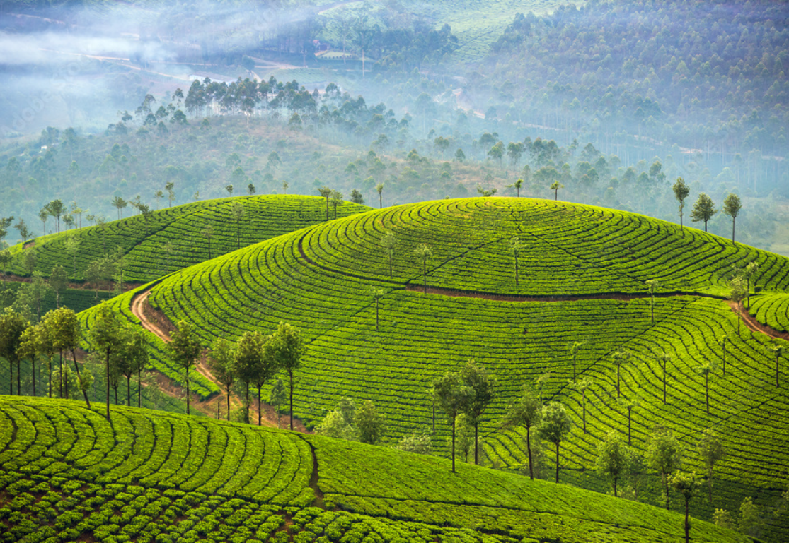
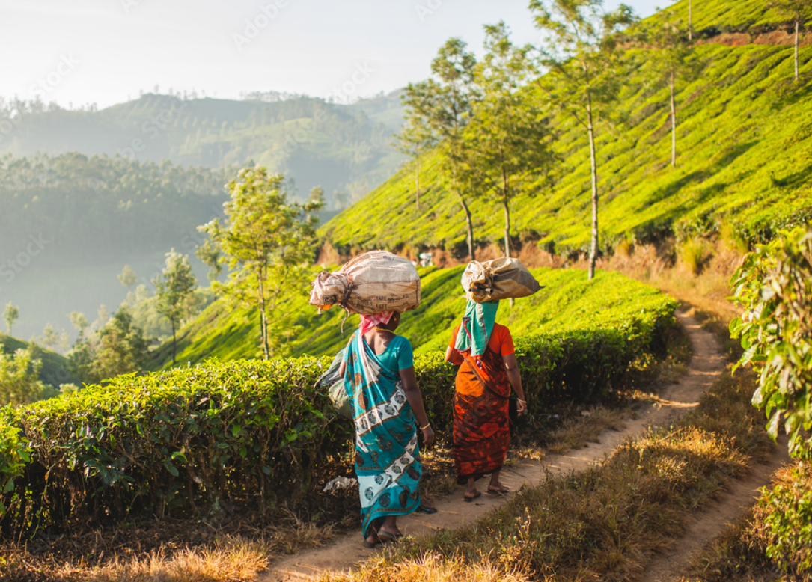
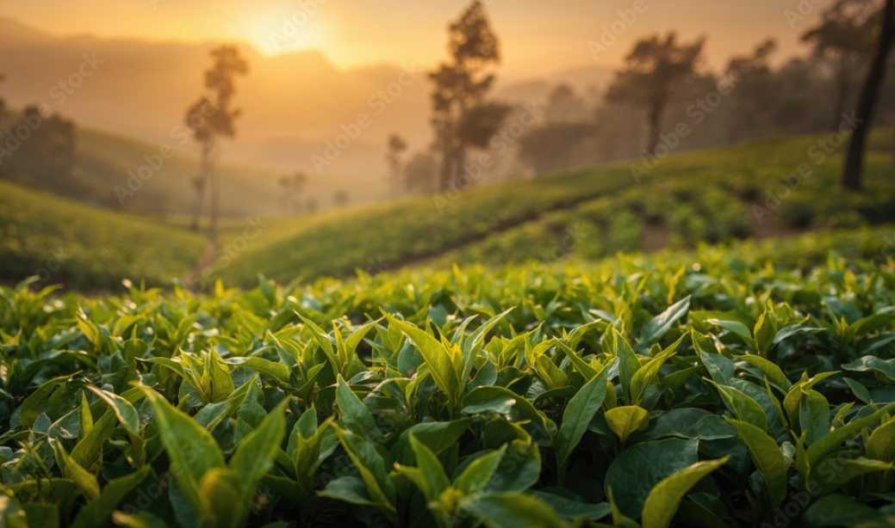
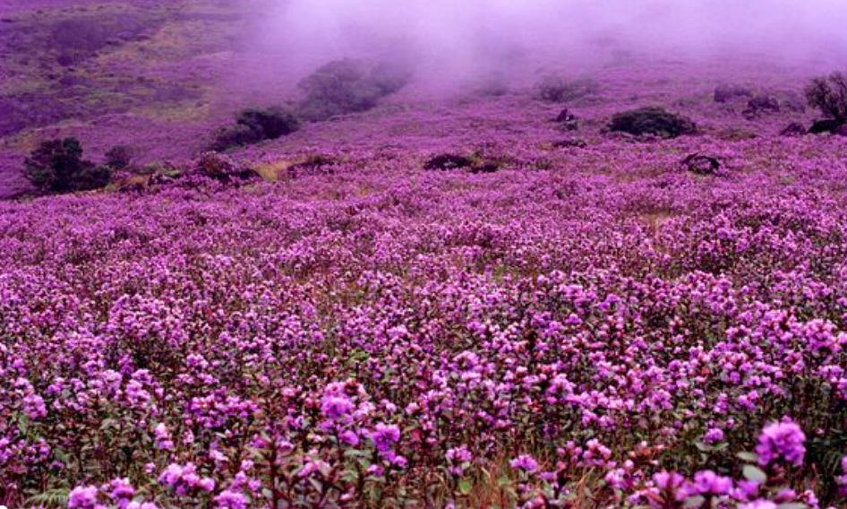
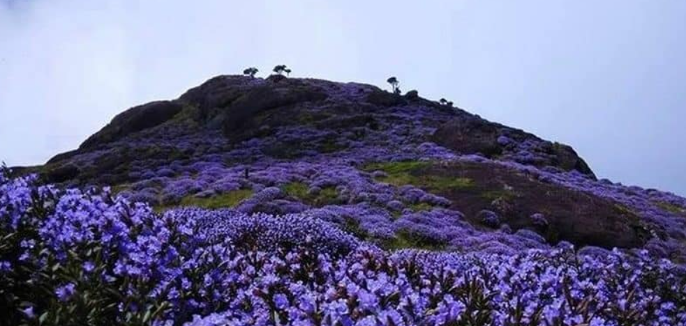

Munnar is a beautiful hill station in Kerala, located in the Idukki district. It is famous for its cool climate, green hills, and scenic beauty. The place is covered with vast tea plantations that look like a green carpet over the mountains. Tourists visit Munnar to enjoy fresh air, peaceful surroundings, and natural landscapes.
Munnar is also well known for the rare Neelakurinji flowers, which bloom once every 12 years and cover the hills in a beautiful blue color. The tea gardens are one of the main attractions, where visitors can see how tea is grown and processed. The combination of misty mountains, tea estates, and unique flowers makes Munnar a perfect tourist destination.





Munnar is a beautiful hill station in Kerala, located in Idukki District. It is one of India's most famous tourist destinations, known for its tea plantations, mist-covered mountains, cool climate, waterfalls, forests and wildlife. It lies at an altitude of about 1,600 metres (5,200 feet) above sea level.
The name Munnar comes from the Malayalam words Moonu (Three) and Aaru (River). It means "Land of Three Rivers", referring to the meeting point of the Muthirapuzha, Nallathanni and Kundala rivers.
The region was originally inhabited by tribal communities such as the Muthuvan and Malayarayan. In the early 1800s, British surveyors explored the area. During the late 19th century, British planters started coffee cultivation, which was later replaced by tea. Large tea estates were established, making Munnar a famous hill station and summer retreat during British rule.
Munnar is one of India's largest tea-growing regions. Tea cultivation began during British rule and continues to be the backbone of the local economy. Visitors can enjoy beautiful tea gardens, tea factories and tea museums.
Munnar is famous for the rare Neelakurinji flower, which blooms once every 12 years and covers the hills with beautiful blue flowers.
Today, Munnar is one of Kerala's most popular tourist destinations. It is internationally known for tea plantations, eco-tourism, trekking, wildlife and breathtaking natural beauty.